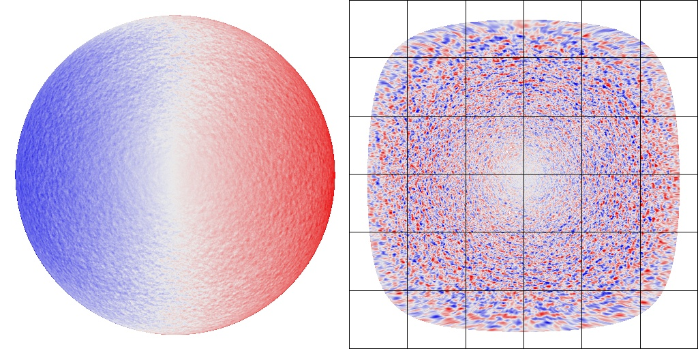
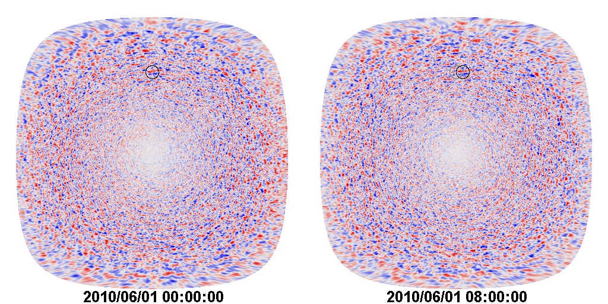
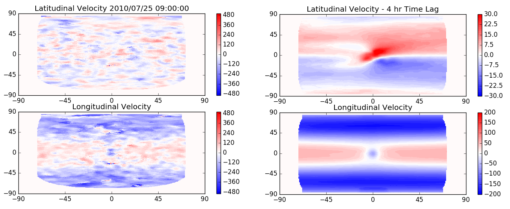
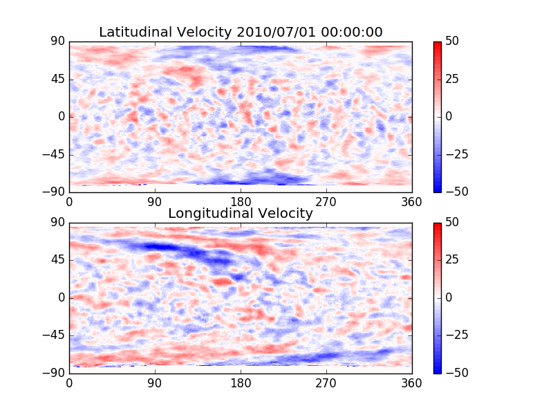
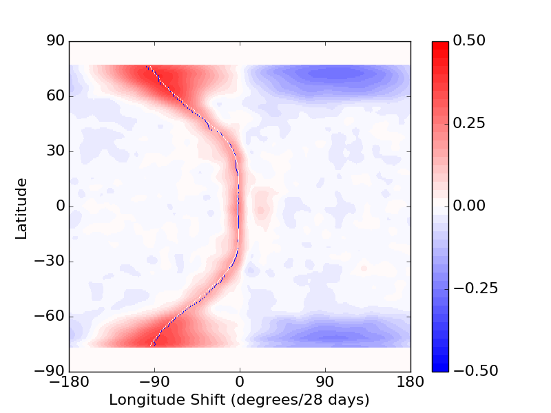
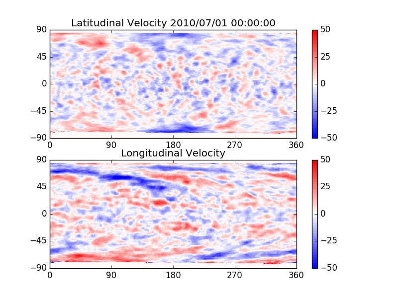
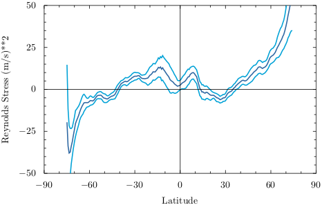
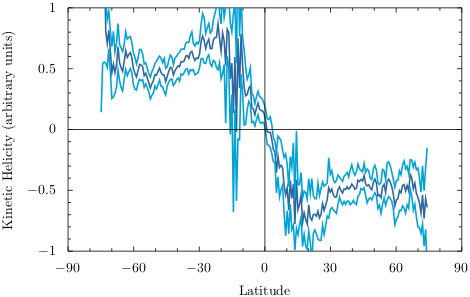
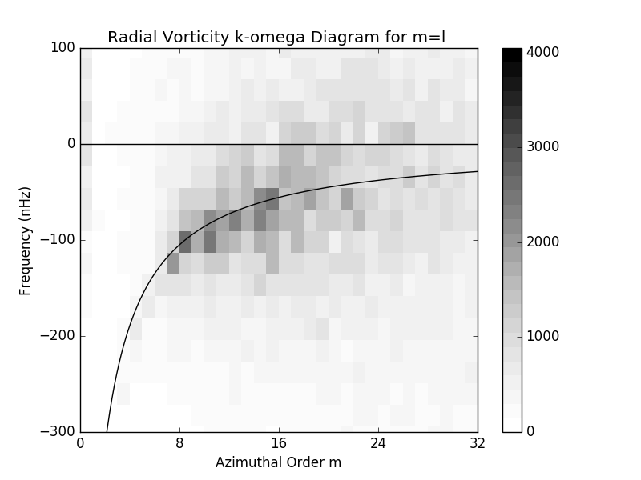
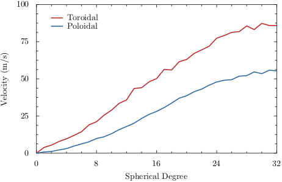

Large-Scale Convection
Giant Cell Maps
Giant cells represent the largest convective structures on the Sun, extending to the base of the convection zone and driving key rotational dynamics.
First proposed by George Simon and Nigel Weiss in 1968, giant cells are long-lived (months-long), deep-reaching flow structures. Decades of search culminated in 2013 when Hathaway, Upton, and Colegrove published the first observational maps of giant cells in Science.
Mapping these flows utilizes Dopplergrams from the Helioseismic and Magnetic Imager (HMI) aboard SDO. The process requires removing disk stationary signals (such as differential rotation, spacecraft motion, and meridional flow) to isolate supergranules, then tracking these features over 4, 8, and 16-hour intervals.
Streamline animation
We have constructed a streamline animation showing daily giant cell flows superimposed on maps of radial vorticity.
Download Vortices Video (423 MB)
SDO/HMI Dopplergram Processing: 12-minute average maps (left) are filtered to isolate convective supergranules and remapped to longitude-latitude coordinates (right).
Correlation & Rotation Modeling

Feature Tracking: Local Correlation Tracking (LCT) matches supergranular patterns in consecutive Doppler maps (separated by 8 hours here) inside latitude-dependent windows.
The flow velocities are measured using 4-hour lags. Large-scale systemic signals are filtered out by subtracting long-term averages. Daily preliminary maps are then stitched by averaging hourly data over a full Carrington Rotation (27 days).
By cross-correlating these preliminary maps over 28-day gaps, we determine the rotation rate of the giant cell pattern itself. The resulting differential rotation curve is surprisingly flat at the equator, showing velocities slower than helioseismic models.
Final flow maps are corrected using this empirical differential rotation rate to project measurements relative to the target time.

Disk averages: Raw flow map displacement (left) and the long-term 8-year average (right) showing systemic meridian and rotation velocities.

Rigid alignment: Preliminary map showing rigid Carrington rotation alignment before latitudinal drift correction.

Rotation Curve: 28-day cross-correlation showing peak alignments (blue line) and polynomial fit (white line).

Final Corrected Map: Map incorporating differential rotation offsets, utilizing up to 36 days of high-latitude observations.
Scientific analyses
Analyzing daily giant cell maps reveals crucial insight into momentum transport, helicity, and wave propagation inside the Sun.
Reynolds Stress
Reynolds stress indicates momentum flux. Taking the product of longitudinal and latitudinal velocities shows an equatorward flux of angular momentum at high latitudes (above +/- 40 degrees) which disappears near the equator.

Reynolds Stress (blue): 8-year average with 2-sigma error bounds, showing high-latitude equatorward momentum transport.
Kinetic Helicity
Kinetic helicity is the dot product of velocity and vorticity. Proxies show negative helicity in the northern hemisphere and positive in the southern, reflecting the Coriolis force twisting these large-scale flows.

Helicity Profile (blue): Consistent hemisphere-flipped helicity with 2-sigma error limits.
Wave Dynamics (Rossby Waves)
a k-omega diagram mapping sectoral modes in time reveals a prominent ridge of power matching Rossby wave theory. These planetary-scale waves are confined primarily to the low-latitude equatorial strip.

k-omega Diagram: Ridge of power indicating Rossby waves with frequencies proportional to 1/(m+1).
Spherical Harmonic Spectra
Decomposing the velocities into toroidal (vortices) and poloidal (convective sources) components shows that toroidal power dominates, indicating giant cell flows are heavily rotational.

Velocity Spectra: Toroidal (red) vs Poloidal (blue) components showing toroidal dominance.
Giant Cell Database
Daily maps of longitudinal and latitudinal velocities (00:00 UT, grids of 512x256 in FITS format). a sample Python script to read these files is available below.